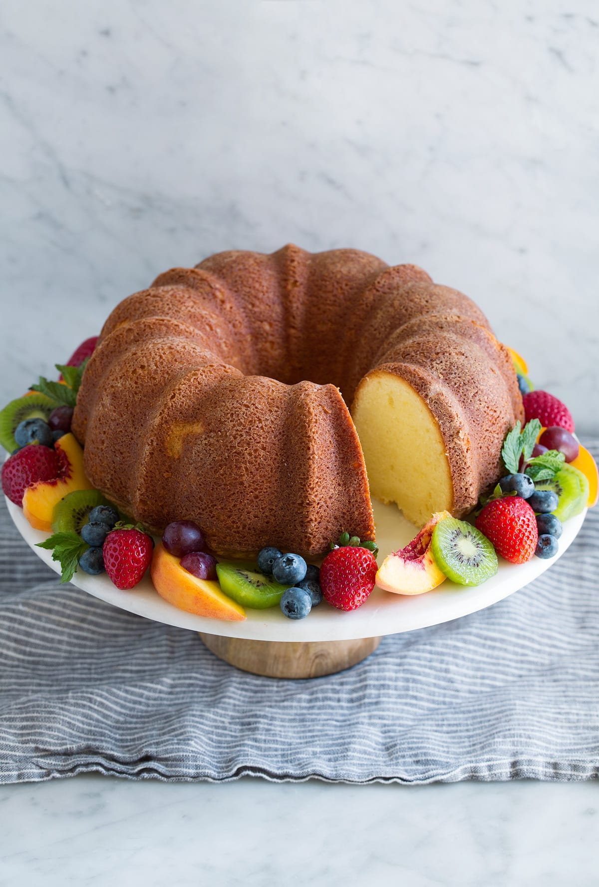

Pound cake!

Heavenly Pound Cake! It’s deliciously buttery and moist, amazingly soft and melt-in-your-mouth tender and it has an irresistible flavor. It’s the perfect dessert for any celebration and it doesn’t even require a frosting!
Ingrediants
- Cream cheese
- Unsalted butter
- Granulated sugar
- Salt
- Eggs
- Vanilla
- Unbleached all-purpose flour
Steps
- Heat oven: preheat oven to 325 degrees
- Cream fats: in the bowl of an electric stand mixer blend butter and cream cheese until smooth.
- Add in sweetener and salt, mix until fluffy: add in sugar and salt and whip on medium-high speed until mixture is light and fluffy, about 3 minutes. Scrape bowl.
- Blend eggs one at a time, add vanilla: mix in eggs one at a time, until just blended, and adding in vanilla with last egg. Scrape down sides of bowl.
- Add flour at once and mix: add in flour then mix just until combined.
- Prepare baking pan: grease and flour baking pan (bundt or loaf pan).
Return to recipies